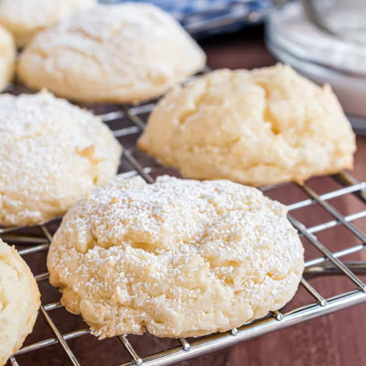

Cheesecake Cookies

Description
These Cheesecake Cookies are so creamy and tender. Its a delicious cookie recipe
that's not too sweet but totally addictive.
These delicious, fluffy cream cheese cookies MELT in your mouth
and have the most delightful flavor;
perfectly sweet with a nice tang from the cream cheese and a hint of vanilla.
Ingredients
- 1/2 cup unsalted butter 113g, room temperature
- 4 ounces cream cheese 113g, room temperature
- 1 cup granulated sugar 200g
- 1 egg room temperature
- 2 tsp vanilla extract 10 ml
- 1 3/4 cups all purpose flour 210 g
- 1/2 tsp baking powder
- 1/2 tsp salt
Steps
- Whisk together the flour, salt and baking powder in a medium bowl and set aside.
- Using a stand mixer fitted with a paddle attachment,
or an electric hand mixer,
cream the butter and cream cheese together.
Add the sugar in and beat until light and fluffy.
Add the egg and vanilla in and mix until combined.
Scrape the bowl down and mix one more time to combine.
- Add the dry mixture into the wet and mix on low until just combined.
Use a spatula to scrape the bottom and give the mixture one last mix then cover and
chill for at least an hour.
- Heat oven to 375F then portion out roughly two tablespoon-sized pieces and roll into a ball.
The dough will be sticky so It's best to dampen your hands a bit and
just wash them when they get a bit covered.
Place about two inches apart on a baking sheet lined with parchment paper or a silpat
and bake for 10 minutes or until the edges are set and just turning golden.